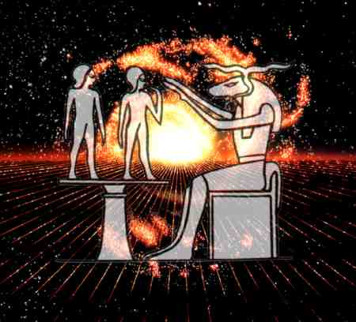

The Etheric Double
© copyright Alfred Ballabene, Vienna, 1999
 |
Chnum shapes body and Ka (= the etheric body)
Some thoughts about etheric doubles (forerunners) as a proof, that OBEs are not hallucinative.
In the field of OBE, there is a very interesting phenomenon, which is not brought in OBE literature and OBE www pages, - the observations of "etheric doubles" or "forerunners" (I do not know if this term exists in English - it is the translated version of a German term). The doubles (forerunners) are an unconscious form of subtle body separation. This phenomenon is not observed by the OBEer him/herself, who is the origin of the apparition, but is observed by other persons. For that reason reports about this phenomenon are not found in OBE articles, but elsewhere in literature.
One special form of the double is the forerunner - as a result of the "OBEers" thoughts and imagination the OBEer unconsciously sends his subtle body to the location at which his thoughts are fixed (mostly his home). Here the double does all the automatisms, which usually are done when arrived at home (it is similar to "false awakening"). By this way they announce their coming by sounds like that of steps or sounds at the coattrack. Some times (seldom) the OBEers are even seen, which event is found in literature under "observation of the double".
Because these events are observed by other persons and in the case of the "forerunners" are verified some minutes later by the real coming of the announced person, I concern these events as an additional verification of OBEs (besides those of NDE, where physical events in other rooms are told about later on by the NDEers).
Just a short time ago I was very astonished, as my wife told me, that she is accustomed to the audible form of this phenomenon, which lets her know that I shall arrive some minutes later (she does not believe in OBE, but well in telepathy and she interprets this phenomenon as a form of telepathy).
To make you familiar with phenomenon of the double I shall tell you some reports of observations of my mother in law and some friends.
"While meditating in our yoga circle I reached a state, in which I was nearly unconscious of my physical body. The room became more brilliant in color and then I saw Vayu (Alfred) entering the room and sitting down at the side of Guru Ananda. This seemed quite real, and quite as he always did, with one little difference, namely that he was holding a bunch of yellow flowers in his hands.
Then I started to reflect about and it seemed strange to me, because Vayu was known to have his own circle at the same time. Looking again to the place where Vayu was sitting, he had vanished." (Ant.)
"My mother in law went together with me to the movie, to see the "Compte of Monte Christo". Just before the beginning of the movie she noticed to have forgotten something important at home and therefore I left the cinema. Then after a while (the home was not far away of the cinema) she saw me entering the cinema coming towards her and sitting down aside her. She felt that this was my double, who looked like me as before, besides the fact that a shine was around me and that I seemed a bit greater. Some moments later the door opened and I entered in reality". (Bal.)
Source: http://mailbox.univie.ac.at/Alfred.Ballabene/english/obepart3/double.htm